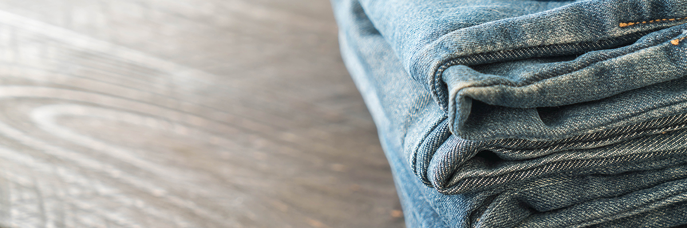

Prodenim-один из ведущих текстильных брендов в Узбекистане, который занимается производством текстильных изделий, представляющий Узбекистан на мировом рынке с 2018 года.
Prodenimфункционирует в кластерной системе и включает в себя 3 основных завода таких как:
(SST) Surxon Sifat Textile и (MST) Marokand Sifat Textile которые специализируются на производстве высококачественной пряжи.
И завод (AJT) Afrasiab Jeans Textile который производит разнообразную джинсовую ткань (denim) по самым передовым технологиям.
Интеграция кластерной системы позволяет нам лучше контролировать весь процесс производства, которое способствует изготовлению текстильной продукции высокого качества.
Компания владеет полями, на которых выращивается и обрабатывается хлопок, чтобы непрерывно снабжать Prodenim сырьем в необходимом объеме для производства пряжи, ткани и последовательно готовой продукции. «Качественное сырье - залог качественной готовой продукции». Последовательно это система позволяет нам гарантировать выдающееся качество для потенциальных клиентов и партнёров.
Предприятие наладило партнёрские отношение как с местными, так и с зарубежными компаниями и экспортирует в страны такие как Китай, Бангладеш, Пакистан, Иран, Турция, Россия, Белоруссия и другие страны из Европы, Африки и Азии.
Миссия - быть одним из ведущих мировых игроков, специализирующихся в секторе джинсовой ткани и пряжи премиум-класса, и производить продукцию, которая полностью соответствует международным стандартам, ориентироваться на потребности и требования клиентов и быть конкурентоспособным на мировом рынке за счет лучшего качества, новейших технологий и постоянных инноваций.
Видение
Ценности
Удовлетворенность и восторг клиентов - мы ставим потребности наших клиентов на первое место и стремимся приносить пользу, предоставляя продукцию высочайшего качества.
Превосходное качество работы - мы проявляем высочайший профессионализм в нашей работе и отношениях, и стремимся к постоянному совершенствованию в нашем стремлении к совершенству.
Стремление к совершенству - мы будем использовать дизайнерское мышление и технологические инновации для доставки быстрой моды нашим клиентам.
Обеспечение безопасного рабочего место и продвижение здоровой рабочей привычки - мы соблюдаем глобальные стандарты благополучия рабочих и человеческих ресурсов для создания эффективных, здоровых, счастливых и удовлетворенных сотрудников.
Забота об окружающей среде и сообществе - мы обращаем внимание на то, что мы создаем, как мы это создаем и как это влияет на людей и окружающую среду.